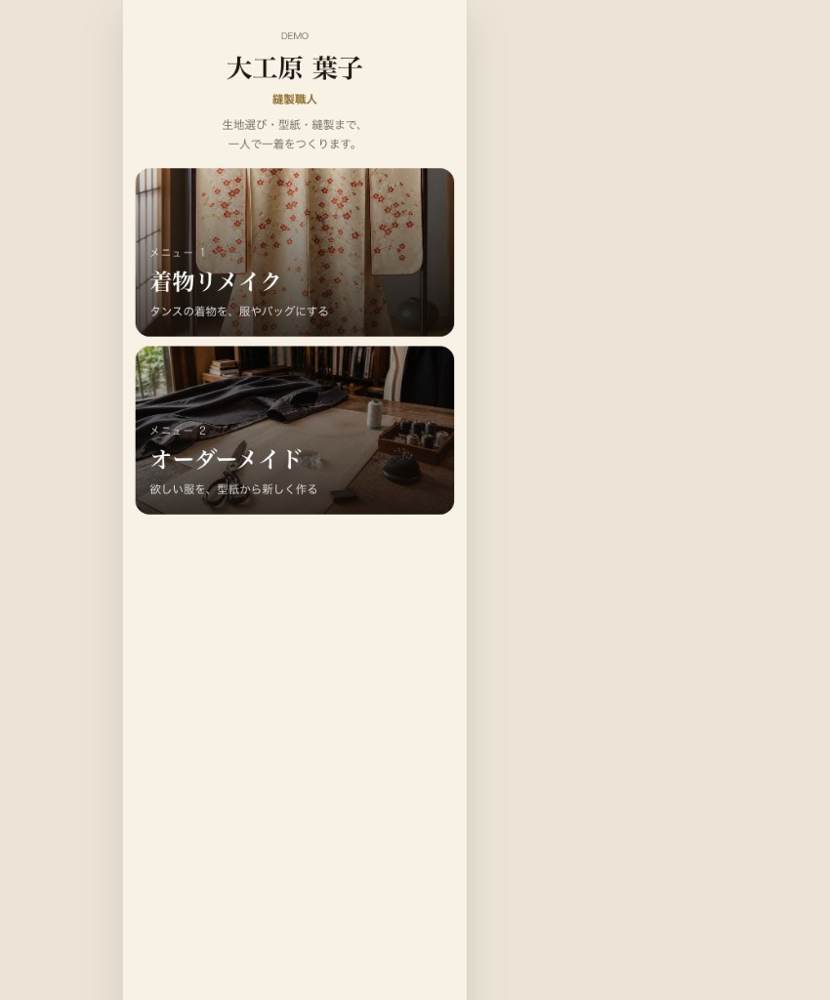
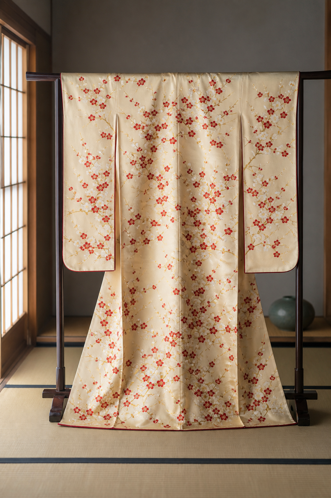
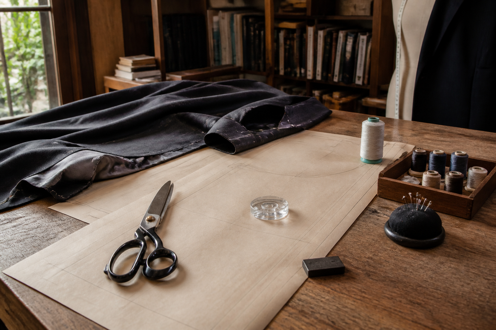

BNIグラーノ / 宇部光太



「相談の敷居を下げる、ToC向けの入口ツール」です。大工原さんの技術や信頼は、すでに1対1で十分伝わっていると思うので、そこから受注につなげる動線を試しに作りました。
開発に大きくコストをかける段階ではありません。イメージ × 概算 × 相談への一歩だけを担うアプリとして使う想定です。
将来的にはAI画像生成も可能ですが、今回は入れていません。大工原さんのセンスを学習させないと、思考とズレた提案になる可能性もあるため、まずはデモで体験だけ共有したい、という位置づけです。
手元でイメージを膨らませられる → 相談・受注が増えるか、を試したい狙いです。
角度の高い相談を増やすこと。価格感が分からず踏み出せない方の背中を押すツールです。
手応えがあれば、デザイン→発注→売上管理までワンストップ化も可能。今は「相談が増えるか」を確かめたい段階です。
ToB（法人・量産など）は別途ご相談です。今回は個人のお客様（ToC）向けの想定です。
本店サイト：Circular One（JAPAN IMEX） — Kimono Crafts / Vintage Kimonos
触ってみて、使い心地・価格感のズレ・「こういう相談が増えたらうれしい」など、率直なご感想をいただければ幸いです。
デモを開く宇部光太